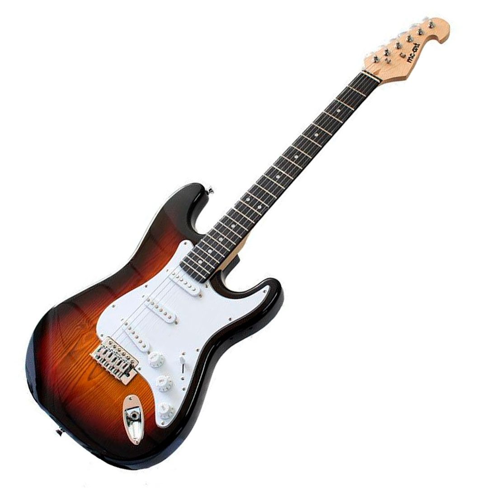

La guitarra eléctrica es un instrumento de cuerda pulsada que utiliza el principio de inducción electromagnética para convertir las vibraciones de sus cuerdas de metal en señales eléctricas.
La guitarra eléctrica nació durante la década de 1930 debido a la necesidad de que los guitarristas pudieran escucharse mejor en las grandes bandas de jazz. Las guitarras acústicas no tenían suficiente volumen para competir con instrumentos como las trompetas, los saxofones o la batería. Los primeros modelos utilizaban pastillas magnéticas, dispositivos capaces de captar las vibraciones de las cuerdas y convertirlas en señales eléctricas que luego eran amplificadas mediante un amplificador. Una de las primeras guitarras eléctricas comerciales fue la Rickenbacker "Frying Pan", presentada en 1931. En los años 50, compañías como Fender y Gibson revolucionaron el instrumento. Leo Fender lanzó la Telecaster en 1950 y la Stratocaster en 1954, mientras que Gibson popularizó la legendaria Les Paul. Desde entonces, la guitarra eléctrica se convirtió en uno de los instrumentos más importantes de la música moderna.